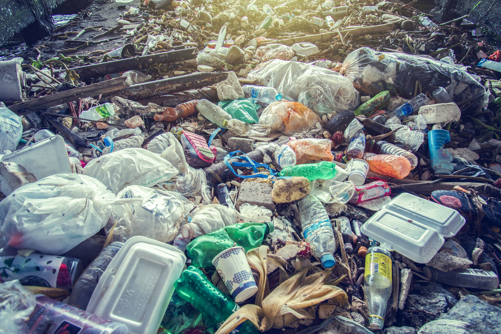

दिल्ली में छोटी-बड़ी हजारों औद्योगिक इकाईयां हैं, जिनमें बड़ी संख्या में कोयला इस्तेमाल होता है. बदरपुर थर्मल पावर जैसे प्लांट हैंIलाखों दोपहिया और चार पहिया वाहन हैं, हर दिन नई कारें सड़कों पर आ रही हैं Iअक्टूबर और नवम्बर में किसान खेत में लगी हुई पराली को जमीन से काटने की बजाय उसमें आग लगा देते हैं जिससे खेत खाली हो जाता है Iइसी जलायी गयी पराली का धुंआ उड़ता हुआ दिल्ली और राजधानी क्षेत्र में आ जाता है जिससे यहाँ पर दिन में ही धुंध छा जाती है और लोग साफ सुथरी हवा के लिए तरसने लगते हैं Iकचरे की समस्या
शहरों में कचरे के ढेर लगे हुए हैं। बढ़ती आबादी और शहरीकरण के कारण कूड़े की समस्या विकराल रूप धारण कर रही है। जल प्रदूषण एक बड़ी समस्या है Iकचरा निकासी का कोई मजबूत ढाँचा नहीं है। ये कचरे कुछ भी हो सकते हैं, जैसे कि किसी तेल फैक्ट्री के कचरा, रासायनिक फैक्ट्री का कचरा, आम आदमी के जीवन शैली से उत्पन्न कचरा
